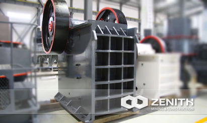
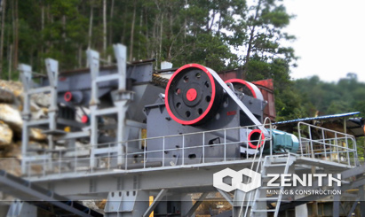
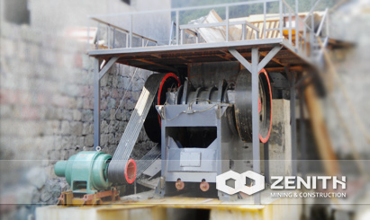
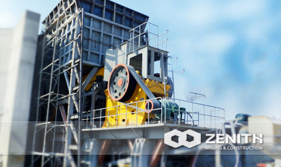

- 
- 
- 
- 
PE Jaw Crusher
PE series jaw crusher belongs to a common crushing machine in the process of mining. One of our main products,Jaw Crusher is designed by engineers with large reduction ratio,even granularity,simple structure, reliable operation,convenient maintenance,low cost.
Our PE jaw crusher are of 6 different models, which can meet most crushing requirements in primary and secondary crushing. As per Feedback, our experts will make continuous improvements on our products to meet customers' changing needs.
Widely Application of PE Jaw Crusher
Zenith's PE jaw crusher is suitable for primary crushing, even in the most challenging conditions. Whether it is used to crusher an extra-hard kind of stone, or demolition debris, you can depend on Zenith jaw crusher due to its high ratio of performance and price.
It is widely used in fields of mining, metallurgy, construction, smelting, hydropower and chemical industries etc. As for the processing materials, it can be used to deal with all kinds of stones, such as the granite, limestone, basalt quartz, river stone, and sand gravel, etc. As for ore materials, it can deal with gold ore, iron ore, copper ore, manganese ore, bauxite and coal, etc. Of course, PE series jaw crushers are also applicable for recycling construction waste, slags, and crushing debris as well as glass.
how does the PE jaw crusher work ?
This machine is driven by motor,the motor transmits power through belt, drives the moving jaw do periodic motion to the fixed jaw surrounding the eccentric shaft. The angle between toggle plate and moving jaw increases when moving jaw moves up. So the moving jaw closes to the fixed jaw. The stuff will be crushed in this process. The angle of Jaw Crusher between toggle plate and moving jaw decreases when moving jaw moves down; the moving jaw of Jaw Crusher moves away from fixed jaw by the pulling of rod and spring, and the products after crushing will be discharged from the outlet of Jaw Crusher.
PE jaw crusher Benefits and advantages
- Integrated steel structures are used for the base of bearing;
- The application of world-class manufacturing processes and high-tech materials.
- The crushing chamber uses "V"-shaped structure, so that the feeding size equal to the nominal one;
- The crushing chamber is deep and without dead zone, increases the capacity and the output;
- Lubrication system is safe and reliable, convenient to replace parts, easy to maintain;
- Low noise, less dust;
- The outlet employs shim adjustment system, convenient and reliable, and increase the flexibility of the equipment;
The tacnology data
| Model | Feed Opening (mm) | Max Feeding (mm) | Discharge Opening (mm) | Capacity (t/h) | REV (r/min) | Power (kw) | Motor Model | Machine Size (mm) |
|---|---|---|---|---|---|---|---|---|
| PE200×350 | 200×350 | 170 | 20-50 | 2-6 | 220 | 6-7.5 | Y160M-6/7.5 | |
| PE250×400 | 250×400 | 210 | 20-60 | 5-20 | 310 | 6-15 | Y180L-6/15 | 1450×1315×1296 |
| PE250×750 | 250×750 | 210 | 20-60 | 8-22 | 320 | 6-30 | Y225M-6/30 | |
| PE500×750 | 500×750 | 425 | 50-100 | 45-100 | 275 | 6-55 | Y280M-6/55 | 1890×1916×1870 |
| PE600×900 | 600×900 | 500 | 65-160 | 70-120 | 250 | 6-75 | Y315S-6/75 | 2520×1840×2303 |
| PE750×1060 | 750×1060 | 630 | 80-140 | 130-260 | 250 | 8-90 | Y315L1-8/90 | 2620×2302×3110 |
| PE900×1200 | 900×1200 | 750 | 95-165 | 220-380 | 200 | 8-130 | JR127-8/130 | 3789×2826×3025 |
| PE1000×1200 | 1000×1200 | 850 | 195-265 | 230-380 | 200 | 8-130 | JR127-8/130 | 3889×2826×3025 |
| PE1200×1500 | 1200×1500 | 1020 | 150-300 | 400-800 | 220 | 8-200 | YR355M4-8/200 | 4930×3150×3700 |